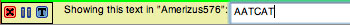
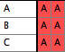
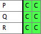
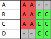
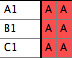
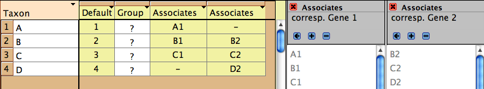

Managing Molecular Data
Molecular data (DNA or protein sequences) can be edited, manipulated, simulated and analyzed in various ways in Mesquite. Most of the features discussed elsewhere concerning editing and analysis of general categorical data also apply to molecular data; here we focus on features specifically designed for sequence data.Contents
- Editing molecular data
- Combining molecular matrices and sequences
- Other tools for managing molecular matrices
- Codon Positions
- Genetic Codes

Editing molecular data
Molecular data can be imported from files of NBRF, FASTA, GenBank/GenPept, PHYLIP, CLUSTAL, and simple table format. It can also be exported to some of these formats.The Character Matrix Editor can be used to edit a molecular sequence matrix. Standard ambiguity codes are allowed.
Alter/Transform Tools
The following can be applied to all or the selected portions of a molecular sequence matrix in the Character Matrix Editor. These are available under the Alter/Transform submenu of the Matrix menu (some of these may be under "Other Choices"):- Reverse Complement (DNA matrix only) — reverses the order of contiguously selected blocks of sequence and complements the sequence
- Collapse Gaps — collapses gaps in the selected block by pushing all sites to the left, to to yield unaligned sequences
- Remove Gaps-Only Characters — Removes from the matrix all characters that consist of nothing but gaps.
- Shift Other to Match — Shifts other sequences to match a region in a selected sequences; described in the manual for the Align package.
- Shift To Minimize Stop Codons — Shifts each sequence 0, 1, or 2 bases so as to minimize the number of stop codons. The amount each sequence will be shifted will vary from sequence to sequence. This feature requires that codon positions be designated.
- Convert Uncertainties to Polymorphisms — Converts all uncertainties in the selection to polymorphisms. For example, for a nucleotide sequence, a Y (C or T) will be converted into "C andT".
- Convert Polymorphisms to Uncertainties — Converts all polymorphisms in the selection to uncertainty. For example, for a nucleotide sequence, a cell that has both C and T will be converted into "C or T", i.e., Y.
- Convert to RY — Converts A and G to R, and C and T, in a nucleotide sequence
- Arbitrarily Resolve State Ambiguity — Any cell that has partial uncertainty in the state (e.g., "Y", which is C or T) will be resolved into one of its states, chosen randomly. Thus, a Y will be converted to a C with 50% probability, and to a T with 50%.
- Nucleotide complement (DNA matrix only) — enters the complementary sequence into the selected cells
- Trim Terminal Gap Characters — deletes characters at edges of matrix that are gaps-only.
The view of the matrix can be adjusted in various ways in the Display menu. Cells can be colored according to the state at the site (Color Cells submenu, Character State) or according to a value like the GC bias (Color Cells submenu,Cell Value; can request this coloring to use a moving window). Examples of this are shown below. The Display menu contains other options such as a Bird's eye view which makes the cells narrow to show more of the sequences.
Copy Sequence (at bottom of Edit menu) copies the selected cells of the matrix into the computer's clipboard as a sequence. That is, whereas the standard Copy would place into the clipboard selected pieces of the matrix in tab-delimited text format (e.g., if the sequence AATCA is selected, "A-tab-A-tab-T-tab-C-tab-A" would be copied), this modified Copy Sequence command does not include tabs (thus, "AATCA" would be copied). This style of copying is useful when interacting with programs like Sequencher (TM). For instance, if you want to find a piece of sequence in a matrix in Mesquite within a chromatogram viewer of Sequencher, do the following: select the sequence in Mesquite, choose Copy Sequence, then go to Sequencher, select Find Bases, and paste the sequence as the search string.
Alignment
The Align package contains utilities for sequence alignment. These include manual alignment tools (for shifting blocks of sequence, for example), and automated tools (e.g., sending a region of the matrix to MAFFT or MUSCLE to align, or a pairwise alignment tool in the editor that will align one sequence to another). See the Align manual for more details.Finding Sequences
You have several options to find sequences in a matrix.Pieces of sequences can be found using the Find Sequence and Find All Sequences submenus of the Edit menu. The current options are:
- Matching Sequence: This finds sequences matching a target sequence the user enters. The search allows a certain number of mismatches. Optionally, it can search for the reverse, complement and reverse complement of the target sequence.
- Maintain Target Match: This highlights and maintains highlighted the first occurence of a given sequence in a given taxon. First, you are asked which taxon to search in. Then, it displays a panel like this:

underneath the matrix. The first button (red X) is to close the panel; the second pauses the search; the third allows you to select another taxon as your focus. If you type a sequence into the text area, the matching sequence (if any) will be highlighted in the matrix. Mesquite is constantly monitoring this text, and so you don't need to give any command to find again if you change the text. This is useful if working with a program like Sequencher. If you see a stretch of sequence while viewing chromatograms that you'd like to find in the matrix in Mesquite, type in the sequence into the text box and you will quickly be taken to it in the taxon. - Maintain Clipboard Match: This is similar to Maintain Target Match, except that it obtains the search string not from the text area but from the clipboard. If the clipboard changes, the function will automatically find the sequence again in the matrix. This is useful if working with a program like Sequencher. If you turn on Maintain Clipboard Match, then you can copy stretches of a sequence within Sequencher, and Mesquite will automatically highlight it, without your having to return to Mesquite or give any other command to it. (Mesquite is constantly monitoring the clipboard to see if it changes).
Combining molecular matrices or sequences
Often you have sequences in different matrices, and you need to fuse them into a single matrix for analyses. You may be adding new sequences from an existing gene, or you may be adding new genes for existing taxa.Adding new taxa/sequences
If you want to take two matrices and concatenate them vertically, i.e. add new taxa to an existing set of gene sequences, then you can do it either from a menu or using Drag and Drop. |
 |
 |
- Merge Taxa & Matrices from File: In the Taxa&Trees menu, this function reads in an external file and attempts to concatenate taxa from the file onto taxa blocks of the current file, and also to add their data to existing matrices. This is useful to add new gene sequences to an existing file. File formats that can be incorporated are NEXUS, NBRF, and FASTA. This incorporation will NOT preserve the associated information of the external NEXUS file such as footnotes for the taxa and characters. The procedure for using this is:
- Open the first file.
- Select Merge Taxa &Matrices from File. It will ask you to which taxa block you want to fuse the taxa block being read. Select the taxa block to which the new sequences are to be added.
- If it warns you that there are duplicate taxon names, then you may be making a mistake. Note in the example above, the taxon names are all different in the two files. If there are some shared taxa between the two files but the sequences are of the same gene, then if you use this procedure you will overwrite the old sequences with the new. If you are dealing with two different genes, see the section on Adding Genes below.
- Then it will ask you to "Select matrix with which to fuse the matrix being read." If the new matrix being read in concerns the same gene as the first file, then you will probably want to select that matrix in the first file and hit OK. (You would hit Cancel if the second file being read in contained a different gene; see Adding Genes below.)
- It should then append the new sequences to your matrix. .
- Drag and Drop: If you drag FASTA, GenBank/GenPept, or NBRF files onto a Character Matrix Editor showing sequence data, the sequences in these files will be added to the matrix as new taxa. All files that you drag and drop in one operation must be of the the same file format.
Here is a video demonstrating various ways to merge matrices from different files:
Adding genes
There are two aspects to bringing together data from two separate genes: first, to bring the sequences from the two genes into the same file as two separate matrices, and second, to concatenate them into a single matrix. Here we will explain how to bring them into the same file; in the next section we will explain how to concatenate the matrices.Our goal is to bring the two sequence matrices into a common file and belonging to a common block of taxa. That way, if you subsequently edit taxon names or add and delete taxa, these changes will affect both matrices synchronously.
If you have two files, each with sequences from a different gene but with identical blocks of taxa (i.e. the list of taxa is the same and with the exact same names), then you can open one file first, then use Include File to bring the second matrix into the same file. This will result in both matrices belonging to the same taxa block.
If you have two files, each with sequences from a different gene but with blocks of taxa that are non-identical because taxon names are different, then the only mechanism in Mesquite to bring them together in Mesquite currently is to use Fused Matrix Export (NEXUS) described under Concatenating Genes.
If you have two files, each with sequences from a different gene but with blocks of taxa that are non-identical because of differing taxon inclusion, then you can use Merge Taxa & Matrices from File to bring the two files together. This requires that any taxa that are shared between the two files have the exact same names. This is the procedure:
- First, open the one file. Then select Merge Taxa & Matrices from File from the Taxa & Trees menu, and choose the second file.
- You will be asked "To which block of taxa do you want to fuse the taxa being read in?". In most cases you will have just one choice, the taxa block in your first file; choose it and hit OK.
- It may warn you that there are duplicate taxon names; click OK because you were expecting taxon names to be the same in the two files.
- Then it will ask you to "Select matrix with which to fuse the matrix being read." If the new matrix being read in concerns a different gene, then you will probably want to hit Cancel so as to make a new matrix for these sequences. (You would hit OK if the second file being read in contained the same gene but new taxa; see Adding New Taxa/Sequences above.)
- You should now have a file with one taxa block and two matrices:
| File 1: |
File 2: |
Merged File: |
Concatenating genes
If you want to take two sequence matrices and concatenate them horizontally to make long sequences including both genes, then how you do this depends on whether your taxa have the exact same names in the two matrices, or not. |
 |
- Concatenate Matrices: After you have brought the two matrices into the same file and belonging to the same taxa block using the methods described above under Adding Genes, to concatenate the two matrices go to the Character Matrix editor of one of the matrices. Select (Character Matrix Editor)Matrix>Utilities>Concatenate Matrices to fuse the second matrix into it. After concatenation, the first matrix will have the second matrix's sequences added terminally. The second matrix will still exist on its own; you may want to delete it or close its file (if it was in a linked file).
- Fused Matrix Export (NEXUS): If the corresponding taxa have different names in the two matrices, then this is the easiest method to fuse, although it can also be useful when taxon names are the same. It is a special file exporter that can fuse matrices of different genes as it exports. It is available by choosing Export in the File menu. If you have a single taxa block with multiple matrices attached to it (e.g., one for each gene), then this exporter will write a single combined matrix with the sequences of different genes concatenated for each taxon. It will also write CHARPARTITION and CHARSETs to record which section of the fused matrix corresponds to which source matrix. It will also write a MrBayes block with that program's partitioning commands. If the different matrices are of mixed type (DNA, protein, non-molecular categorical) then you have a choice between reducing them to simple categorical data or maintaining a mixed matrix (suitable for MrBayes). Often however, you will have slightly different names for the sequences of different genes, and these may therefore exist in the file represented by different taxa blocks. For instance, you may have a taxa block with taxa "A1", "B1", and "C1" with corresponding matrix for COI sequences (gene 1) from species A, B and C, and another taxa block with taxa "B2", "C2", and "D2" for 28S sequences (gene 2) from the same species. You want to fuse them as follows:
|  |
 |
The Fused Matrix exporter permits you to export these into a single matrix as long as you have indicated how the sequences correspond to one another. To do this, we suggest you create a new taxa block representing the species or specimens. In this example, create a taxa block "Species" with taxa A, B and C. This will be the "master block of taxa" that will organize the export. (Alternatively, you could choose one of the genes' taxa blocks as the master block.) Set up a Taxa Association between the master block of taxa and each of the other blocks of taxa. With the first Taxa Association between species and Gene 1 indicate that "A1" belongs with species A, "B1" belongs with species B, and "C1" belongs with species C. Set up the species-Gene 2 association similarly. The two taxa association will look like this in the List of Taxa window for the master taxa block:

Then when you choose Fused Matrix Export, choose Species as your master taxa. The exporter will then find all of the data corresponding to each species, either under the species taxon itself or under one of the linked taxa indicated by the Taxa Association, and compose a fused matrix. If a single master taxon has more than one corresponding taxa in one of the other matrices, the data are merged using the same rules as for Merge Taxa.
Other Tools for Managing Molecular matrices
Managing sequences in different matrices, especially if from different genes, can be difficult. Several functions assist in this. These features are not restricted to molecular data, but we anticipate most of their use will be with sequences.- Alternative Taxon Names: This feature allows you to have several alternative naming schemes for taxa, e.g. one set of names that includes your specimen codes, another set that uses formal taxonomic names (for publication), another set whose names are condensed for exporting the file to programs like CLUSTAL that can handle only short names, and so on. For details see here.
- Translation to protein: a new matrix of amino acids, derived by translation from existing protein-coding DNA matrix, can be formed by choosing Characters>Make New Matrix from>Translate DNA to Protein. This request that codon positions, and the correct genetic code, be assigned.
Display of Sequences
Protein-coding sequences can be colored by the amino acid into which a triplet would be translated (under the genetic code for that triplet) by choosing Display>Color Cells>Color Nucleotide by Amino Acid.Consensus Sequences
Consensus Sequences can be displayed above the character matrix by choosing Display>Add Info Strip>Consensus Sequence Strip, as indicated below by the arrows:
In the above examples, two consensus sequences strips are displayed, with slightly different options.
Options are available by touching on the consensus sequence:
Codon Positions
You can assign codon positions to a portion of a sequence by the following steps:- Open the character list window by choosing Characters>List of Characters.
- In the list window, select the characters whose position you wish to designate (choose Select All from the Edit menu if you wish to select all characters).
- Touch on the title box ("Codon Position") of the Codon Position column, and a menu will drop down. That menu will have a submenu, called "Set Codon Position", that contains various options for setting codon positions.
This is explained in the following video:
Genetic Codes
The genetic code for sequence data can be specified in Mesquite's List of Characters window (by choosing List of Characters, and then Columns>Current Genetic Codes, or with a data matrix frontmost, Matrix>Genetic Codes...). Genetic codes are assigned to individual characters (thus allowing one to have a mixed matrix of mitochondrial and nuclear data, for example). To assign a genetic code, choose select the characters, and use the popup menu of the title of the "Genetic Code" column in the List of Characters window.The genetic code affects, among other things, the Translate DNA to Protein command, as well as the coloring of nucleotide sequences if Color Nucleotide by Amino Acid is chosen.